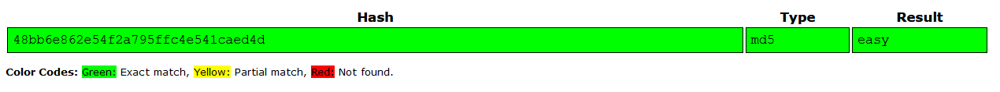

TryHackMe - Crack The Hash

| Room Name | Crack The Hash |
|---|---|
| Room Code | crackthehash |
| Points | 2390 |
| Dificulty | Easy |
| Room Created by | ben |
CRACK THE HASH
In this room . we need to crack the different types of hashes . To crack the hash .first we need to find what type of the hash it is . and based upon the type of hash we need to crack it.
this are list of tools which uses to crack the hash
[Task -1] Level 1
#1 48bb6e862e54f2a795ffc4e541caed4d
we can Crack this hash by Two Methods online and offline . offline is more flexible and feasible
Method 1: Online
Crack Station using this online tool we can able to cracke the hashes by simply pasting the hash value .but this tool does not crack all the hashes . becouse if our target hash value does not present in the crackstation database it does not crack .

Method 2: offline
hash-identifier
atomloop@DESKTOP-TSGRLCH:~$ hash-identifier
#########################################################################
# __ __ __ ______ _____ #
# /\ \/\ \ /\ \ /\__ _\ /\ _ `\ #
# \ \ \_\ \ __ ____ \ \ \___ \/_/\ \/ \ \ \/\ \ #
# \ \ _ \ /'__`\ / ,__\ \ \ _ `\ \ \ \ \ \ \ \ \ #
# \ \ \ \ \/\ \_\ \_/\__, `\ \ \ \ \ \ \_\ \__ \ \ \_\ \ #
# \ \_\ \_\ \___ \_\/\____/ \ \_\ \_\ /\_____\ \ \____/ #
# \/_/\/_/\/__/\/_/\/___/ \/_/\/_/ \/_____/ \/___/ v1.2 #
# By Zion3R #
# www.Blackploit.com #
# Root@Blackploit.com #
#########################################################################
--------------------------------------------------
HASH: 48bb6e862e54f2a795ffc4e541caed4d
Possible Hashs:
[+] MD5
[+] Domain Cached Credentials - MD4(MD4(($pass)).(strtolower($username)))
we identified what type of the hash it is . next we need to crack this . there are number of tool to crack the hashes . hear iam using hashcat tool which is preinstalled on kali-linux
| Flag | Meaning |
|---|---|
| hachcat | software used to crack |
| -m | Hashmode # number of the hash |
| -a | Attack Mode , 0 means dictnory attack |
| -o | to save hashed result into which format we need |
| --show | To display the cracked string |
| 48bb6e862e54f2a795ffc4e541caed4d | Hash value to crack |
| rockyou.txt | a file which contains the list of words which is femilear |
Atom $ hashcat -m 0 -a 0 --show 48bb6e862e54f2a795ffc4e541caed4d rockyou.txt
48bb6e862e54f2a795ffc4e541caed4d:easy
#2 CBFDAC6008F9CAB4083784CBD1874F76618D2A97
first we need identify hash type and then we need to crack
Atom $ hash-identifier
#########################################################################
# __ __ __ ______ _____ #
# /\ \/\ \ /\ \ /\__ _\ /\ _ `\ #
# \ \ \_\ \ __ ____ \ \ \___ \/_/\ \/ \ \ \/\ \ #
# \ \ _ \ /'__`\ / ,__\ \ \ _ `\ \ \ \ \ \ \ \ \ #
# \ \ \ \ \/\ \_\ \_/\__, `\ \ \ \ \ \ \_\ \__ \ \ \_\ \ #
# \ \_\ \_\ \___ \_\/\____/ \ \_\ \_\ /\_____\ \ \____/ #
# \/_/\/_/\/__/\/_/\/___/ \/_/\/_/ \/_____/ \/___/ v1.2 #
# By Zion3R #
# www.Blackploit.com #
# Root@Blackploit.com #
#########################################################################
--------------------------------------------------
HASH: CBFDAC6008F9CAB4083784CBD1874F76618D2A97
Possible Hashs:
[+] SHA-1
[+] MySQL5 - SHA-1(SHA-1($pass))
SHA-1 is the hash type . to find th hash mode number (number specifyed on the every hash type )
Atom $ hashcat --help | grep 'SHA1'
100 | SHA1 | Raw Hash
150 | HMAC-SHA1 (key = $pass) | Raw Hash, Authenticated
160 | HMAC-SHA1 (key = $salt) | Raw Hash, Authenticated
12000 | PBKDF2-HMAC-SHA1 | Generic KDF
12001 | Atlassian (PBKDF2-HMAC-SHA1) | Generic KDF
5400 | IKE-PSK SHA1 | Network Protocols
7300 | IPMI2 RAKP HMAC-SHA1 | Network Protocols
22600 | Telegram Desktop App Passcode (PBKDF2-HMAC-SHA1) | Network Protocols
11200 | MySQL CRAM (SHA1) | Network Protocols
8100 | Citrix NetScaler (SHA1) | Operating System
9800 | MS Office <= 2003 $3/$4, SHA1 + RC4 | Documents
9810 | MS Office <= 2003 $3, SHA1 + RC4, collider #1 | Documents
9820 | MS Office <= 2003 $3, SHA1 + RC4, collider #2 | Documents
15500 | JKS Java Key Store Private Keys (SHA1) | Password Managers
13300 | AxCrypt in-memory SHA1 | Archives
18100 | TOTP (HMAC-SHA1) | One-Time Passwords
so we finded hash mode number . lets begin to crack
Atom $ hashcat -m 100 -a 0 -o cracked.txt CBFDAC6008F9CAB4083784CBD1874F76618D2A97 rockyou.txt
hashcat (v6.0.0) starting...
OpenCL API (OpenCL 1.2 pocl 1.5, None+Asserts, LLVM 9.0.1, RELOC, SLEEF, DISTRO, POCL_DEBUG) - Platform #1 [The pocl project]
=============================================================================================================================
* Device #1: pthread-Intel(R) Core(TM) i7-7700HQ CPU @ 2.80GHz, 5963/6027 MB (2048 MB allocatable), 8MCU
Minimum password length supported by kernel: 0
Maximum password length supported by kernel: 256
Hashes: 1 digests; 1 unique digests, 1 unique salts
Bitmaps: 16 bits, 65536 entries, 0x0000ffff mask, 262144 bytes, 5/13 rotates
Rules: 1
Applicable optimizers:
* Zero-Byte
* Early-Skip
* Not-Salted
* Not-Iterated
* Single-Hash
* Single-Salt
* Raw-Hash
ATTENTION! Pure (unoptimized) backend kernels selected.
Using pure kernels enables cracking longer passwords but for the price of drastically reduced performance.
If you want to switch to optimized backend kernels, append -O to your commandline.
See the above message to find out about the exact limits.
Watchdog: Hardware monitoring interface not found on your system.
Watchdog: Temperature abort trigger disabled.
Host memory required for this attack: 66 MB
Dictionary cache hit:
* Filename..: rockyou.txt
* Passwords.: 14344385
* Bytes.....: 139921507
* Keyspace..: 14344385
Session..........: hashcat
Status...........: Cracked
Hash.Name........: SHA1
Hash.Target......: cbfdac6008f9cab4083784cbd1874f76618d2a97
Time.Started.....: Thu Jul 23 18:57:37 2020 (1 sec)
Time.Estimated...: Thu Jul 23 18:57:38 2020 (0 secs)
Guess.Base.......: File (rockyou.txt)
Guess.Queue......: 1/1 (100.00%)
Speed.#1.........: 62807 H/s (0.36ms) @ Accel:1024 Loops:1 Thr:1 Vec:8
Recovered........: 1/1 (100.00%) Digests
Progress.........: 8192/14344385 (0.06%)
Rejected.........: 0/8192 (0.00%)
Restore.Point....: 0/14344385 (0.00%)
Restore.Sub.#1...: Salt:0 Amplifier:0-1 Iteration:0-1
Candidates.#1....: 123456 -> whitetiger
Started: Thu Jul 23 18:57:20 2020
Stopped: Thu Jul 23 18:57:39 2020
Atom $ cat cracked.txt
cbfdac6008f9cab4083784cbd1874f76618d2a97:password123
#3 1C8BFE8F801D79745C4631D09FFF36C82AA37FC4CCE4FC946683D7B336B63032
same method what we performed previous steps
Atom $ hash-identifier
#########################################################################
# __ __ __ ______ _____ #
# /\ \/\ \ /\ \ /\__ _\ /\ _ `\ #
# \ \ \_\ \ __ ____ \ \ \___ \/_/\ \/ \ \ \/\ \ #
# \ \ _ \ /'__`\ / ,__\ \ \ _ `\ \ \ \ \ \ \ \ \ #
# \ \ \ \ \/\ \_\ \_/\__, `\ \ \ \ \ \ \_\ \__ \ \ \_\ \ #
# \ \_\ \_\ \___ \_\/\____/ \ \_\ \_\ /\_____\ \ \____/ #
# \/_/\/_/\/__/\/_/\/___/ \/_/\/_/ \/_____/ \/___/ v1.2 #
# By Zion3R #
# www.Blackploit.com #
# Root@Blackploit.com #
#########################################################################
--------------------------------------------------
HASH: 1C8BFE8F801D79745C4631D09FFF36C82AA37FC4CCE4FC946683D7B336B63032
Possible Hashs:
[+] SHA-256
[+] Haval-256